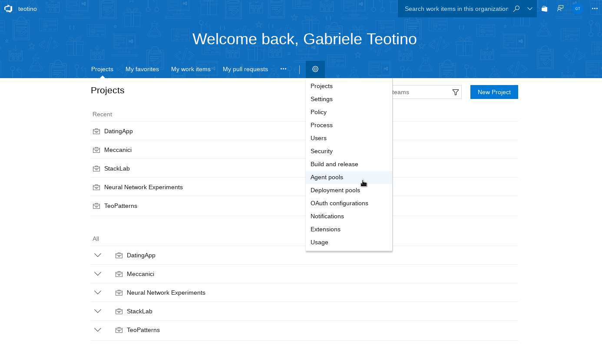

Visual Studio Team Services has a very good build agent: free and with high availability. The only problem is that it is a bit slow because every time you run a build it will start from scratch and download everything. A custom build agent will cache stuff and speed up build times a lot.
For example I am experimenting on a build job that has to build an Angular + .net core API and create a couple docker images.
The steps I use for one of my jobs:
- Initialize agent + job: 20s
- Get sources: 5s
- Nuget package restore: 38s
- Build: 11s
- Publish: 4s
- Build docker image:28s
- Push docker image: 12s
Imagine that you are experimenting with a new job step and that every time you run a test you a have to wait a few minutes.
Prepare permissions
Open your VSTS profile and go to your security details.
Add a personal access token.
Put a description and choose a duration.
For the scope select Agent Pools (read, manage) and clear all the rest.
Save the token in a safe place.
Prepare Docker container
The official image is on docker hub microsoft/vsts-agent
The standard image with all the tools is 4Gb compressed (check for disk space this is a hit on a VPS space)
Create a folder and add a new script
mkdir ~/vsts_agent
cd ~/vsts_agent
nano run_agent.sh
chmod +x run_agent.shSimple configuration for run_agent.sh
docker run \
-e VSTS_ACCOUNT=<your organization name> \
-e VSTS_TOKEN=<pat> \
-it microsoft/vsts-agent:ubuntu-16.04Advanced configuration for run_agent.sh
docker run \
-e VSTS_ACCOUNT=<your organization name> \
-e VSTS_TOKEN=<pat> \
-e VSTS_AGENT='$(hostname)-agent' \
-e VSTS_POOL=mypool \
-e VSTS_WORK='/var/vsts/$VSTS_AGENT' \
-v /var/vsts:/var/vsts \
-it microsoft/vsts-agent:ubuntu-16.04The image microsoft/vsts-agent:ubuntu-16.04 has minimal capabilities but uses only 0.5Gb of uncompressed disk space.
Run the container
sh run_agent.shCheck the agent
Go in the Agent Pools section of VSTS to view the status and the capabilities offered by each agent.

Use the agent
Edit a Build Job and change the Agent Pool to Default to use the agent.
The basic agent microsoft/vsts-agent:ubuntu-16.04 is not able to do much work because no extended capabilities are configured.